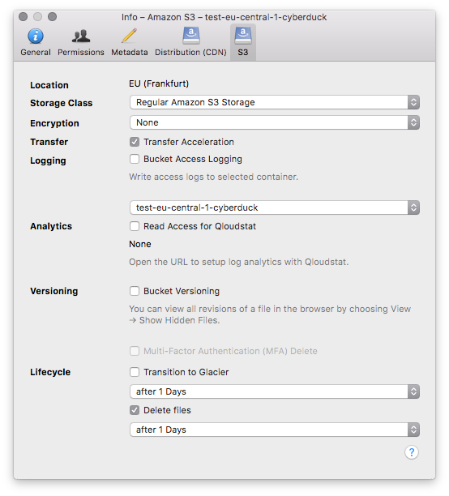
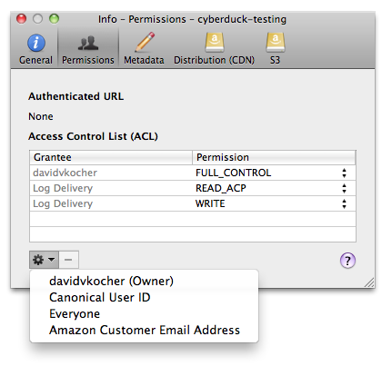

Amazon S3¶
Transfer files to your S3 account and browse the S3 buckets and files in a hierarchical way. For a short overview of Amazon S3, refer to the Wikipedia article.
Connecting¶
You must obtain the login credentials (Access Key ID and Secret Access Key) of your Amazon Web Services Account from the AWS Access Identifiers page. Enter the Access Key ID and Secret Access Key in the login prompt.
IAM User¶
You can also connect using IAM credentials that have the Amazon S3 Full Access template policy permissions attached and optionally the CloudFront Full Access. Make sure you are connecting with AWS4-HMAC-SHA256 signature version (see above).
Generic S3 Profiles¶
For use with third party S3 installations.
Authentication with signature version AWS4-HMAC-SHA256
HTTP
Important
It is discouraged to enable this option to connect plaintext to Amazon S3.
If you have an S3 installation without SSL configured, you need an optional connection profile to connect using HTTP only without transport layer security. You will then have the added option S3 (HTTP) in the protocol dropdown selection in the Connection and Bookmark panels.
Downloadthe S3 (HTTP) profile for preconfigured settings.
HTTPS
Downloadthe S3 (HTTPS) profile for preconfigured settings.
Authentication with signature version AWS2
An incomplete list of known providers that require the use of AWS2
Riak Cloud Storage
HTTP
Downloadthe S3 AWS2 Signature Version (HTTP) profile for preconfigured settings.
HTTPS
Downloadthe S3 AWS2 Signature Version (HTTPS) profile for preconfigured settings.
AWS Gov Cloud¶
AWS China (Beijiing)¶
Connect to the region AWS China (Beijing)
Downloadthe S3 China (Beijing) profile for preconfigured settings.
Access Third Party Buckets¶
Connecting to a bucket you are not the owner (and therefore not included when logging in as above and listing all your owned buckets) is possible. You can access buckets owned by someone else if the ACL allows you to access it by either:
Specify the bucket you want to access in the hostname to connect to like
<bucketname>.s3.amazonaws.com. Your own buckets will not be displayed but only the third-party bucket.Set the Default Path in the bookmark to the bucket name.
Choose Go → Go to Folder… when already connected.
Connecting with Temporary Access Credentials (Token) from EC2¶
If you are running Cyberduck for Windows or Cyberduck CLI on EC2 and have setup IAM Roles for Amazon EC2 to provide access to S3 from the EC2 instance, you can use the connection profile below that will fetch temporary credentials from EC2 instance metadata service at http://169.254.169.254/latest/meta-data/iam/security-credentials/s3access to authenticate. Edit the profile to change the role name s3access to match your IAM configuration.
Downloadthe S3 (Credentials from Instance Metadata) profile for preconfigured settings
Connecting Using Credentials in ~/.aws/credentials¶
Instead of providing Access Key ID and Secret Access Key, authenticate using credentials managed in ~/aws/credentials using third-party tools.
Downloadthe S3 (Credentials from AWS Command Line Interface) profile for preconfigured settings.
You must provide configuration in the standard credentials property file ~/.aws/credentials from AWS Command Line Interface. Configure a bookmark with the field titled Profile Name in ~/.aws/credentials matching the profile name from ~/.aws/credentials. The properties aws_access_key_id, aws_secret_access_key and aws_session_token are supported.
You might be interested in scripts maintained by third parties to facilitate managing credentials
Connecting Using AssumeRole from AWS Security Token Service (STS)¶
Instead of providing Access Key ID and Secret Access Key, authenticate using temporary credentials from AWS Security Token Service (STS) with optional Multi-Factor Authentication (MFA). Refer to Using IAM Roles.

Downloadthe S3 (Credentials from AWS Security Token Service) profile for preconfigured settings.
You must provide configuration in the standard credentials property file ~/.aws/credentials from AWS Command Line Interface. Configure a bookmark with the field titled Profile Name in ~/.aws/credentials matching the profile name from ~/.aws/credentials with the role_arn configuration.
Example configuration¶
Refer to Assuming a Role.
[testuser]
aws_access_key_id=<access key for testuser>
aws_secret_access_key=<secret key for testuser>
[testrole]
role_arn=arn:aws:iam::123456789012:role/testrole
source_profile=testuser
mfa_serial=arn:aws:iam::123456789012:mfa/testuser
Read Credentials from ~/.aws/credentials¶
When editing a bookmark, the Access Key ID is set from the default profile in the credentials file located at ~/.aws/credentials if such a profile exists.
Cyberduck CLI¶
List all buckets with Cyberduck CLI using
duck --username <Access Key ID> --list s3:/
List the contents of a bucket with
duck --username <Access Key ID> --list s3:/<bucketname>/
Refer to the Cyberduck CLI documentation for more operations.
Third Party Providers¶
There are a growing number of third parties besides Amazon offering S3 compatible cloud storage software or solutions. Here is a non-exhaustive list:
File System¶
Buckets¶
Creating a Bucket¶
o create a new bucket for your account, browse to the root and choose File → New Folder… (macOS ⌘N Windows Ctrl+Shift+N). You can choose the bucket location in Preferences (macOS ⌘, Windows Ctrl+,) → S3. Note that Amazon has a different pricing scheme for different regions.
Attention
Mountain Duck 4.6.1 or later: You will receive a prompt for the region when creating a new bucket
Supported Regions
EU (Ireland)
EU (London)
EU (Paris)
EU (Stockholm)
US East (Northern Virginia)
US West (Northern California)
US West (Oregon)
Asia Pacific (Singapore)
Asia Pacific (Tokyo)
South America (São Paulo)
Asia Pacific (Sydney)
EU (Frankfurt)
US East (Ohio)
Asia Pacific (Seoul)
Asia Pacific (Mumbai)
Canada (Montreal)
China (Beijing)
China (Ningxia)

Important
Because the bucket name must be globally unique the operation might fail if the name is already taken by someone else (E.g. don’t assume any common name like media or images will be available).
You cannot change the location of an existing bucket.
Bucket Access Logging¶
When this option is enabled in the S3 panel of the Info (File → Info (macOS ⌘I Windows Alt+Return)) window for a bucket or any file within, available log records for this bucket are periodically aggregated into log files and delivered to /logs in the target logging bucket specified. It is considered best practice to choose a logging target that is different from the origin bucket.

To toggle CloudFront access logging, select the the Distribution panel in the File → Info (macOS ⌘I Windows Alt+Return) window.
Versions¶
Versioning can be enabled per bucket in File → Info (macOS ⌘I Windows Alt+Return) → S3. Make sure the user has s3:PutBucketVersioning permission permits users to modify the versioning configuration of a bucket.
You can view all revisions of a file in the browser by choosing View → Show Hidden Files.
Revert¶
To revert to a previous version and make it the current, choose File → Revert.
Multi-Factor Authentication (MFA) Delete¶
To enable Multi-Factor Authentication (MFA) Delete, you need to purchase a compatible authentication device. Toggle MFA in File → Info (macOS ⌘I Windows Alt+Return) → S3. When enabled, you are prompted for the device number and one-time token in the login prompt. Never reenter a token in the prompt already used before. A token is only valid for a single request. Wait for the previous token to disappear from the device screen and request a new token from the device.

References¶
Folders¶
Creating a folder inside a bucket will create a placeholder object named after the directory, has no data content, and the MIME type application/x-directory.
Supported Third Party Folder Placeholder Formats¶
Folders created with AWS Management Console.
File Transfers¶
Transfer Acceleration¶
When enabled for the bucket, downloads, and uploads using the S3 Transfer Acceleration endpoints to transfer data through CloudFront’s globally distributed edge locations. The name of the bucket used for Transfer Acceleration must be DNS-compliant and must not contain periods (“.”). You do not need to enter transfer accelerated endpoints manually. When using Transfer Acceleration, additional data transfer charges may apply to connect to s3-accelerate.dualstack.amazonaws.com.

Permissions¶
Make sure the user has s3:GetAccelerateConfiguration permission permits users to return the Transfer Acceleration state of a bucket.
Checksums¶
Files are verified both by AWS when the file is received and compared with the SHA256 checksum sent with the request. Additionally, the checksum returned by AWS for the uploaded file is compared with the checksum computed locally if enabled in Transfers → Checksum → Uploads → Verify checksum.
Multipart Uploads¶
Files larger than 100MB are uploaded in parts with up to 10 parallel connections as 10MB parts. Given these sizes, the file size limit is 100GB with a maximum of 10’000 parts allowed by S3. The number of connections used can be limited using the toggle in the lower right of the transfer window.
Multipart uploads can be resumed later when interrupted. Make sure the user has the permission s3:ListBucketMultipartUploads.
Unfinished multipart uploads¶
You can view unfinished multipart uploads in the browser by choosing View → Show Hidden Files.
Options¶
You can set options with the following hidden configuration options.
Part size for multipart uploads
s3.upload.multipart.size=10485760
Threshold to use multipart uploads is set to 100MB by default
s3.upload.multipart.threshold=104857600
Storage Class¶
You have the option to store files using the Reduced Redundancy Storage (RRS) by storing non-critical, reproducible data at lower levels of redundancy. Set the default storage class in Preferences (macOS ⌘, Windows Ctrl+,) → S3 and edit the storage class for already uploaded files using File → Info (macOS ⌘I Windows Alt+Return) → S3. Available storage classes are
Regular Amazon S3 Storage
Intelligent-Tiering
Standard IA (Infrequent Access)
One Zone-Infrequent Access
Reduced Redundancy Storage (RRS)
Glacier
Glacier Deep Archive
Lifecycle Configuration¶
Specify after how many days a file in a bucket should be moved to Amazon Glacier or deleted.

Restore from Glacier¶
Attention
This function is Cyberduck only.
You can temporarily restore files from Glacier using File → Restore. The file will be restored using standard retrieval and expire 2 days after retrieval. Restoring takes some time and attempting to download an item not yet restored will lead to an error The operation is not valid for the object’s storage class.
Glacier Retrieval Options¶
You can set retrieval options with the following hidden configuration options.
Sets Glacier retrieval tier at which the restore will be processed.
s3.glacier.restore.tier=Standard
→ Valid values are Standard, Bulk, Expedited.
Sets the time, in days, between when an object is uploaded to the bucket and when it expires.
s3.glacier.restore.expiration.days=2
Access Control (ACL)¶
Amazon S3 uses Access Control List (ACL) settings to control who may access or modify items stored in S3. You can edit ACLs in File → Info (macOS ⌘I Windows Alt+Return) → Permissions.

Canonical User ID Grantee¶
If you enter a user ID unknown to AWS, the error message S3 Error Message. Bad Request. Invalid id. will be displayed.
Email Address Grantee¶
If you enter an email address unknown to AWS, the error message S3 Error Message. Bad Request. Invalid id. will be displayed. If multiple accounts are registered with AWS for the given email address, the error message Bad Request. The e-mail address you provided is associated with more than one account. Please retry your request using a different identification method or after resolving the ambiguity. is returned.
All Users Group Grantee¶
You must give the group grantee http://acs.amazonaws.com/groups/global/AllUsers read permissions for your objects to make them accessible using a regular web browser for everyone.
If bucket logging is enabled, the bucket ACL will have READ_ACP and WRITE permissions for the group grantee http://acs.amazonaws.com/groups/s3/LogDelivery.
Default ACLs¶
You can set a default ACL set on new files uploaded and buckets created in Preferences (macOS ⌘, Windows Ctrl+,) → S3 → Default ACL.
Applies to buckets |
Applies to files |
|
|---|---|---|
|
✅ |
✅ |
|
✅ |
✅ |
|
✅ |
✅ |
|
✅ |
✅ |
|
❌ |
✅ |
|
❌ |
✅ |
Permissions¶
The following permissions can be given to grantees:
Bucket |
Files |
|
|---|---|---|
|
Allows grantee to list the files in the bucket |
Allows grantee to download the file and its metadata |
|
Allows grantee to create, overwrite, and delete any file in the bucket |
Not applicable |
|
Allows grantee all permissions on the bucket |
Allows grantee all permissions on the object |
|
Allows grantee to read the bucket ACL |
Allows grantee to read the file ACL |
|
Allows grantee to write the ACL for the applicable bucket |
Allows grantee to write the ACL for the applicable file |
Public URLs¶
You can access all URLs (including from CDN configurations) from the menu Edit → Copy URL and File → Open URL.

Pre-signed Temporary URLs¶
A private object stored in S3 can be made publicly available for a limited time using a pre-signed URL. The pre-signed URL can be used by anyone to download the object, yet it includes a date and time after which the URL will no longer work. Copy the pre-signed URL from Edit → Copy URL→ Signed URL or File → Info (macOS ⌘I Windows Alt+Return) → S3.
There are pre-signed URLs that expire in one hour, 24 hours (using the preference s3.url.expire.seconds), a week, and a month. You can change the hidden preference s3.url.expire.seconds from the default 86400 (24 hours).
Important
It is required that your AWS credentials are saved in keychain. Refer to Passwords.
Force use of AWS2 Signature¶
Using the AWS4 signature version used in Cyberduck version 5.0 and later, pre-signed URLs cannot have an expiry date later than a week. You can revert by setting the default signature version to AWS2 by using the S3 AWS2 Signature Version (HTTP) connection profile.
Note
This deprecated signature version is not compatible with new regions such as eu-central-1.
BitTorrent URLs¶
Use File → Info (macOS ⌘I Window Alt+Return) → S3 to copy the BitTorrent URL of a selected file. The ACL of the object must allow anonymous read. One important thing to note is that the .torrent file describing an Amazon S3 object is generated on-demand, the first time the Torrent URL is requested. Generating the .torrent for an object takes time proportional to the size of that object. For large objects, this time can be significant. Therefore, before publishing a ?torrent link, we suggest making the first request for it yourself. Amazon S3 might take several minutes to respond to this first request, as it generates the .torrent file. Unless you update the object in question, subsequent requests for the .torrent will be fast.
Metadata¶
You can edit standard HTTP headers and add custom HTTP headers to files to store metadata. Choose File → Info (macOS ⌘I Windows Alt+Return) → Metadata to edit headers.
Default Metadata¶
Currently only possible using a hidden configuration option you can define default headers to be added for uploads. Multiple headers must be separated using a whitespace delimiter. Key and value of a header are separated with =. For example, if you want to add an HTTP header for Cache-Control and one named Creator you would set
s3.metadata.default="Cache-Control=public,max-age=86400 Creator=Cyberduck"
Cache Control Setting¶
This option lets you control how long a client accessing objects from your S3 bucket will cache the content and thus lowering the number of access to your S3 storage. In conjunction with Amazon CloudFront, it controls the time an object stays in an edge location until it expires. After the object expires, CloudFront must go back to the origin server the next time that edge location needs to serve that object. By default, all objects automatically expire after 24 hours when no custom Cache-Control header is set.
The default setting is Cache-Control: public,max-age=2052000 when choosing to add a custom Cache-Control header in the Info panel which translates to a cache expiration of one month (one month in seconds equals more or less 60*60*24*30).
Use the hidden configuration option s3.cache.seconds to set a custom default value
s3.cache.seconds=2052000
References¶
Tip
Use curl -I <http://<bucketname>.s3.amazonaws.com/<key> to debug HTTP headers.
Server Side Encryption (SSE)¶
Server-side encryption for stored files is supported and can be enabled by default for all uploads in the S3 preferences or for individual files in the File → Info (macOS ⌘I WIndows Alt+Return) → S3. AWS handles key management and key protection for you.
Defaults¶
Choose Preferences → S3 → Server Side Encryption to change the default.
None will not encrypt files (Default).
SSE-S3 will encrypt files using AES-256 with a default key provided by S3.
SSE-KMS will encrypt files with the default key stored in AWS Key Management Service (KMS).
You can override these default settings in the File → Info (macOS ⌘I Windows Alt+Return) → S3 panel per bucket.
Server-Side Encryption with Amazon S3-Managed Keys (SSE-S3)¶
When changing the setting for a folder or bucket you are prompted to confirm the recursive operation on all files contained in the selected bucket or folder.
Server-Side Encryption with AWS KMS-Managed Keys (SSE-KMS)¶
Among the default SSE-S3 (AES-256), the server-side encryption (SSE) dropdown list allows choosing from all private keys managed in AWS Key Management Service (KMS).
Permissions¶
This requires the kms:ListKeys and kms:ListAliases permission for the AWS credentials used to connect to S3.

When changing the setting for a folder or bucket you are prompted to confirm the recursive operation on all files contained in the selected bucket or folder.
Prevent Uploads of Unencrypted Files¶
Refer to the AWS Security Blog
CloudFront CDN¶
Amazon CloudFront delivers your static and streaming content using a global network of edge locations. Requests for your objects are automatically routed to the nearest edge location, so content is delivered with the best possible performance. Refer to Amazon CloudFront distribution for help about setting up distributions.
Website Configuration¶
To host a static website on S3, It is possible to define an Amazon S3 bucket as a Website Endpoint. The configuration in File → Info (macOS ⌘I Windows Alt+Return) → Distribution allows you to enable website configuration. Choose Website Configuration (HTTP) from Delivery Method and define an index document name that is searched for and returned when requests are made to the root or the subfolder of your website.
To access this website functionality, Amazon S3 exposes a new website endpoint for each region (US Standard, US West, EU, or Asia Pacific). For example, s3-website-ap-southeast-1.amazonaws.com is the endpoint for the Asia Pacific Region. The location is displayed in the Where field following the Origin.

To configure Amazon CloudFront for your website endpoints, refer to Website Configuration Endpoint Distributions with CloudFront CDN.
Known Issues¶
Disable use of Virtual Host Style Requests¶
Set the hidden preference s3.bucket.virtualhost.disable to true if your S3 compatible storage does only support path style requests to reference buckets. Alternatively a custom connection profile with the property set in Properties.
Downloadthe S3 (Deprecated path style requests) profile for preconfigured settings.
Moved Permanently but no Location Header¶
Make sure the IAM user has the permission s3:GetBucketLocation to read the bucket location.
Writing Files to S3 Compatible Third Party Service Provider may Fail¶
The S3 interoperable service must support multipart uploads.
S3 Delete Marker¶
When overwriting files some applications (like Windows File Explorer) will delete files prior to writing the new file. Thus we also forward this delete operation to S3 resulting in the delete marker being set. You can overwrite files with command-line tools which typically do not delete files prior to overwriting.
In Finder.app, Creating a new Top-Level Folder in S3 Fails with Interoperability failure. Bucket name is not DNS compatible. Please contact your web hosting service provider for assistance.¶
A bucket name in S3 cannot have whitespace in the filename. Because a new folder created with Finder.app is named Untitled Folder the operation fails. As a workaround, create a new bucket with mkdir in Terminal.app.
Note
The bucket can be created within the Smart Synchronization mode as the folder only gets uploaded after it is renamed. Make sure to choose a filename with no whitespace. For the additional restrictions of the bucket name, refer to the AWS bucket naming rules.
Saving a file in TextEdit.app will Attempt to Create a Folder /Temporary Items on the Remote Volume. On some Servers, this may fail due to a Permission Failure or Because the Name of the Folder is not Allowed as in S3.¶
You will get the error message As of Mountain Duck version 2.1, Bucket name is not DNS compatible. Please contact your web hosting service provider for assistance...DS_Store files are only saved in a temporary location and not stored on the mounted remote volume.